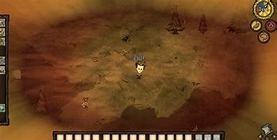

Estaciones
Otoño (regien of giants)
El otoño es la estación más tranquila y segura, con una duración de 20 días. Las temperaturas son agradables y el clima es bastante estable, lo que lo convierte en el momento ideal para recolectar recursos, fortificar tu base y planificar para las estaciones más complicadas, como el invierno o el verano. Aunque no hay amenazas ambientales importantes, hacia el final del otoño puede aparecer el Oso Castor (Bearger), un jefe peligroso que puede destruir estructuras y consumir tus recursos si no estás preparado. Es una temporada clave para organizarte y asegurar tu supervivencia a largo plazo.
Invierno (regien of giants)
El invierno es una estación desafiante que dura 16 días, caracterizada por temperaturas gélidas que pueden provocar hipotermia si no te proteges adecuadamente. Durante este periodo, la comida se vuelve limitada, ya que las plantas dejan de crecer y algunos animales migran o entran en hibernación. Además, debes estar preparado para enfrentarte al Ciervo de Ojo Blanco (Deerclops), un jefe estacional que puede destruir tu base si no tienes un plan. Para sobrevivir, es esencial mantenerte abrigado con equipo como ropa de invierno y thermal stones calentadas, además de asegurarte de contar con una buena reserva de alimentos antes de que llegue la estación.
Primavera (regien of giants)
La primavera es una estación de 20 días marcada por lluvias intensas y constantes, que pueden causar humedad acumulada y afectar tanto la salud mental del personaje como la durabilidad de los objetos. Los charcos de ranas aparecen en el mapa, lo que incrementa el peligro debido a las ranas agresivas que atacan en grupo. Aunque las plantas crecen más rápido, las tormentas pueden complicar las actividades diarias. La primavera también trae al jefe estacional Ganso Alce (Moose/Goose), que aparece junto a sus crías y representa un desafío adicional. Es un momento clave para prepararte para el calor del verano mientras gestionas el clima cambiante y las amenazas locales.
Verano (regien of giants)
En esta version el verano es una de las estaciones más complicadas, durando 16 días y trayendo consigo temperaturas extremas que pueden causar sobrecalentamiento si no te preparas. Este calor puede dañar progresivamente al personaje y generar incendios espontáneos, lo que representa un gran riesgo para estructuras y recursos cercanos. Además, muchos elementos del entorno, como los charcos de ranas y las plantas, se secan o desaparecen, complicando aún más la obtención de comida y materiales. Durante esta estación también puedes enfrentarte al Dragón Alado (Dragonfly), un jefe peligroso que requiere estrategias específicas para derrotarlo. Para sobrevivir, es esencial planificar bien el enfriamiento, utilizando herramientas como las thermal stones, ropa refrigerante o los ice flingos para proteger tanto al personaje como a tu base.
